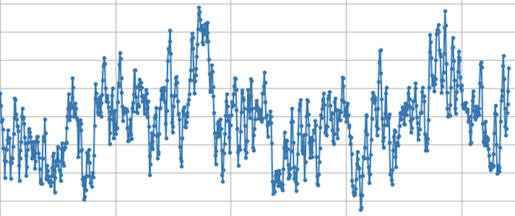
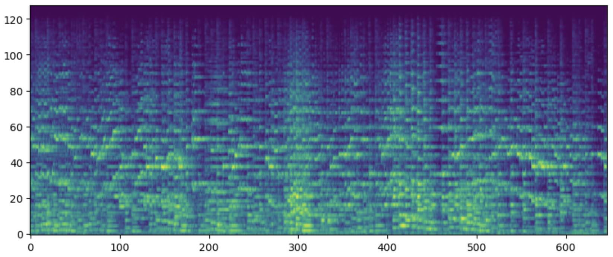
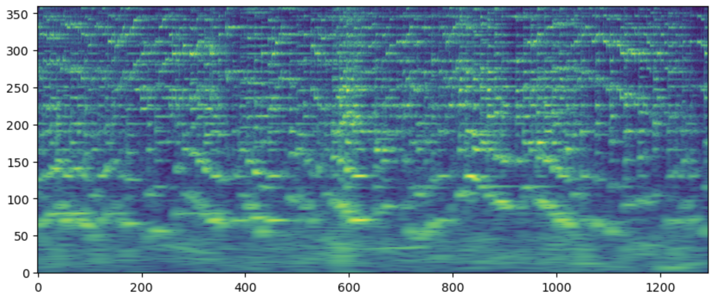
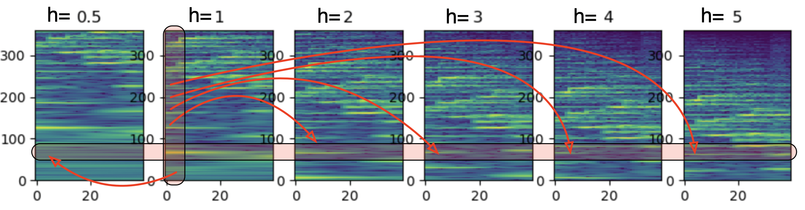
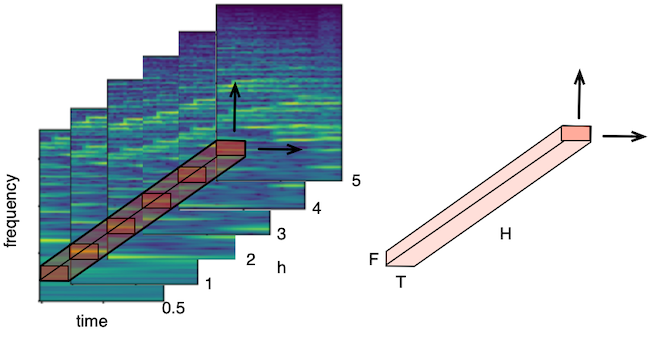
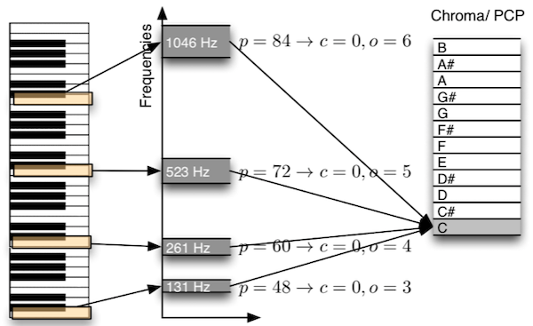

Inputs#
The following type of data are commonly used in MIR as input of deep learning models.
Waveform#
It is possible to use directly the audio waveform \(x(n)\) as input to a model. In this case, the input is a 1-dimensional sequence over time. Such a system is often denoted by end-to-end (E2E). The first layer of the models then act as a learnable feature extractor. It is often either a 1D-convolution, a TCN or a parametric front-end such as SincNet.
More details can be found in the following “Waveform-based music processing with deep learning” by Jongpil Lee, Jordi Pons, Sander Dieleman ISMIR-2019 tutorial.

Log-Mel-Spectrogram (LMS)#
Spectrogram (the magnitude of the Short Time Fourier Transform, i.e. the Fourier Transform performed over frame-analysis) can be converted to the Mel perceptual scale. The goal of this is
to reduce the dimensionality of the data
to mimic the decomposition of the frequencies performed by the cochlea into critical-bands
to allows performing some invariance over small pitch modifications (hence LMS are invariant to the pitch and only represent the so-called timbre).
The conversion of amplitude from linear to the log-scale allows
to map the recording level of the audio to a constant: \(\alpha x(n) \rightarrow \log(\alpha) + \log(X(\omega))\)
to mimic the compression of the amplitude performed by the inner-cell of the cochlea
to change the distribution of the input Usually, a \(\log(1+C x)\) (with \(C=10.000\)) is used instead of a \(\log(x)\) to avoid singularity in \(x=0\).
Another view of the LMS, is to consider that those are equivalent to the MFCC but without the last DCT. This DCT was necessary to decorrelate the dimensions and then allows covariance matrix in GMM-based system. However, this decorrelation is not necessary for deep learning models.

def f_get_lms(audio_v, sr_hz, param_lms):
"""
description:
compute Log-Mel-Sepctrogram audio features
inputs:
- audio_v
- sr_hz
outputs:
- data_m (nb_dim, nb_frame): Log-Mel-Spectrogram matrix
- time_sec_v (nb_frame): corresponding time [in sec] of analysis windows
"""
# --- data (nb_dim, nb_frames)
mel_data_m = librosa.feature.melspectrogram(y=audio_v, sr=sr_hz,
n_mels=param_lms.nb_band,
win_length=param_lms.L_n,
hop_length=param_lms.STEP_n)
data_m = f_log(mel_data_m)
nb_frame = data_m.shape[1]
time_sec_v = librosa.frames_to_time(frames=np.arange(nb_frame),
sr=sr_hz,
hop_length=param_lms.STEP_n)
return data_m, time_sec_v
Constant-Q-Transform (HCQT)#
Constant-Q-Transform was proposed in [Bro91]. As opposed to the Discrete Fourier Transform, which uses a fixed window length for all its frequencies \(f_k\) (hence with a fixed spectral resolution), the CQT adapts the length of the window in order to be able to separate adjacent frequencies. The CQT divides the frequency axis into bins where the ratio between adjacent frequencies \(f_{k+1}/f_k = cst\) and is constant (i.e., logarithmically spaced). This is different from the Short-Time Fourier Transform (STFT), where frequency bins are linearly spaced \(f_{k+1}-f_k = cst\). In music this ratio is \(2^{1/12}\) for adjacent musical pitches (semitones). The CQT allows decreasing this ratio by increasing the number of bins for each semitone (if 3 bins per semitone the ratio is \(2^{1/(3*12)}\)). The window length is then chosen to guarantee a good spectral resolution between adjacent bins, hence adjacent musical pitches. This makes the CQT representation adequates to represent musical signals.
Because of the log-frequency axis, another property arises. The change of pitch of a given musical instrument correspond to a vertical translation of the corresponding CQT (\(\alpha f \rightarrow \log(\alpha) + \log(f)\). This property has been used in some works such as Shift-Invariant PLCA or in 2D-Convolution.

Harmonic-CQT (HCQT)#
The Harmonic CQT has been proposed in [BMS+17]. While the harmonics \(h f_0\) of a given sound with fundamental frequency \(f0\) are not close together in the spectrum. The usual “local correlation of the pixels” assumption underlying 2D-Conv therefore does not hold for musical sound. The idea of the HCQT is to represent this proximity through a new depth/channel dimension. The resulting HCQT is therefore a 3D-tensor where the depth represent different downsampled CQTs (in practice they are all CQT but computed starting from a different \(f_{min}\)) and the other dimensons the time and the CQT frequencies.
In the figure below, the default CQT is referred as “h=1”. The red vertical stripe highlight the fundamental frequency of a sound. In \(h=1\), the stripe highlights \(f_0\). If we downsample the CQT by a factor 2 (indicated in “h=2”), the stripe now highlight \(2 f_0\). If we downsample the CQT by a factor 3 (indicated in “h=3”), the stripe now highlight \(3 f_0\). The various harmonics \(h f_0\) are now aligned vertically across downsampled versions.

The HCQT is obtained by stacking the various downsampled CQTs in depth/channel dimension (see figure below). The HCQT is usually used as input to a 2D-Convolution layer with small kernels \((5 \times 5\) which extend over the whole depth of the HCQT. When used for Multi-Pitch-Estimation, the kernels should therefore learn the specific relationship among harmonics specific to harmonics versus non-harmonics. An extra component \(h=0.5\) is added to avoid octave errors.

def f_get_hcqt(audio_v, sr_hz, param_hcqt):
"""
description:
compute Harmonic CQT
inputs:
- audio_v
- sr_hz
outputs:
- data_3m (H, nb_dim, nb_frame): Harmonic CQT
- time_sec_v (nb_frame): corresponding time [in sec] of analysis windows
- frequency_hz_v (nb_dim): corresponding frequency [in Hz] of CQT channels
"""
for idx, h in enumerate(param_hcqt.h_l):
A_m = np.abs(librosa.cqt(y=audio_v, sr=sr_hz,
fmin=h*param_hcqt.FMIN,
hop_length=param_hcqt.HOP_LENGTH,
bins_per_octave=param_hcqt.BINS_PER_OCTAVE,
n_bins=param_hcqt.N_BINS))
if idx==0:
data_3m = np.zeros((len(param_hcqt.h_l), A_m.shape[0], A_m.shape[1]))
data_3m[idx,:,:] = A_m
n_times = data_3m.shape[2]
time_sec_v = librosa.frames_to_time(np.arange(n_times),
sr=sr_hz,
hop_length=param_hcqt.HOP_LENGTH)
frequency_hz_v = librosa.cqt_frequencies(n_bins=param_hcqt.N_BINS,
fmin=param_hcqt.FMIN,
bins_per_octave=param_hcqt.BINS_PER_OCTAVE)
return data_3m, time_sec_v, frequency_hz_v
Chroma#
Chroma (or Pitch-Class-Profile) [Fuj99] [Wak99] is a compact (12-dimensions) representation of the harmonic content over time of a music track. Its dimensions correspond to the pitch-classes (hence independently of their octave): C, C#, D, D#, E, … Chroma can be obtained by mapping the content of the spectrogram (or the CQT) to the pitch-classes (summing the content of all frequency bands corresponding to the C0, C1, C2, … to obtain the Chroma C, …).

librosa.feature.chroma_stft(*, y=None, sr=22050, S=None, norm=inf, n_fft=2048, hop_length=512, win_length=None, window='hann', center=True, pad_mode='constant', tuning=None, n_chroma=12)
librosa.feature.chroma_cqt(*, y=None, sr=22050, C=None, hop_length=512, fmin=None, norm=inf, threshold=0.0, tuning=None, n_chroma=12, n_octaves=7, window=None, bins_per_octave=36)
Since the direct mapping from spectram/CQT suffers from artifacts (fifth harmonics, noise, percussive instruments), it has been proposed to learn a cleaner chroma representation using deep learning models, the so-called deep-chroma [KW16] [MB17] [WP21].
Chroma are often as input for applications such as Automatic-Chord-Recogniton (ACR), key-detection or Cover-Song-Identification (CSI). We use here for CSI the deep-chroma of [MB17] named crema-PCP.